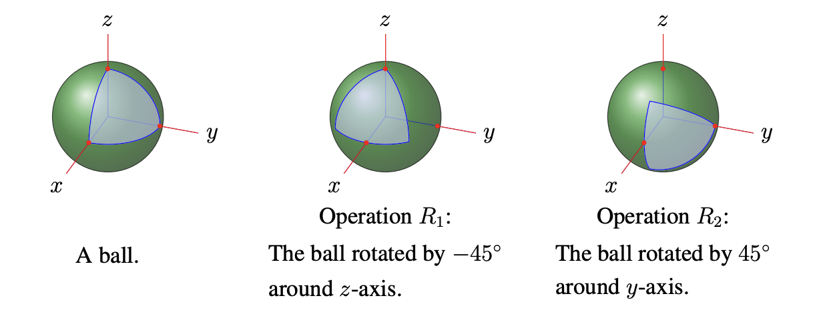
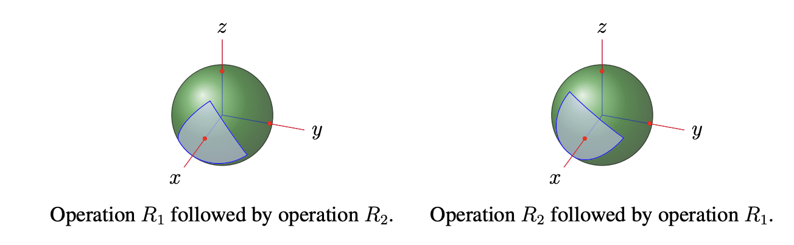
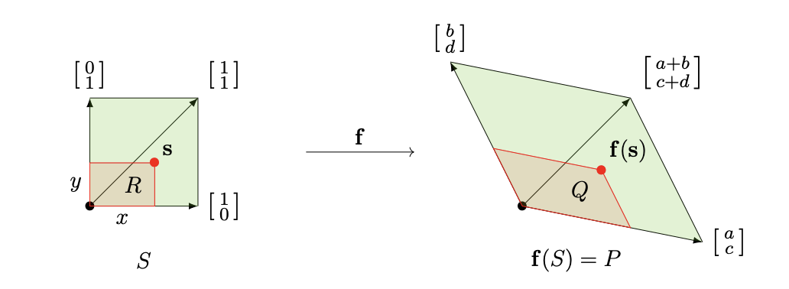
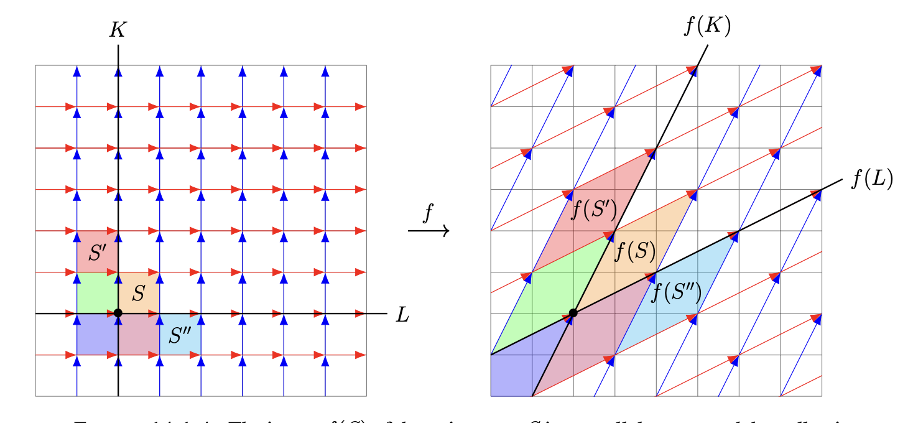

Linear transformations and matrix multiplication
Rotations and linear functions
The overall effect of applying a counterclockwise rotation by an angle \(\theta_1\) and then a counterclockwise rotation by an angle \(\theta_2\) is such a rotation: counterclockwise by the angle \(\theta_1 + \theta_2\). Note in particular that the order in which we apply the \(2\)-dimensional rotations doesn't matter for the final outcome since the angle sums \(\theta_1 + \theta_2\) and \(\theta_2 + \theta_1\) are equal.
When we consider an analogue in \(3\) dimensions, the situation is more subtle (and so more interesting). Think of the following operations you can do to the surface of a ball:
- operation \(R_1\): rotate the ball by \(-45\) degrees around the vertical axis through its center;
- operation \(R_2\): rotate the ball by \(45\) degrees around a specified horizontal axis through its center.

What if you do operation \(R_1\) first and then operation \(R_2\)? What if you do operation \(R_2\) first and then operation \(R_1\)? The overall effect of these is not the same!

Definition: A function \(\mathbf{f} : \mathbb{R}^n \to \mathbb{R}^m\) is called
- a linear function, or a linear transformation, if there is an \(m \times n\) matrix \(A\) for which \(\mathbf{f}(\mathbf{x}) = A\mathbf{x}\) for all vectors \(\mathbf{x} \in \mathbb{R}^n\) (so the \(j\)th column of \(A\) is \(A\mathbf{e}_j = \mathbf{f}(\mathbf{e}_j)\)),
- an affine function, or an affine transformation, if there is an \(m \times n\) matrix \(A\) and a vector \(\mathbf{b} \in \mathbb{R}^m\) for which \(\mathbf{f}(\mathbf{x}) = A\mathbf{x} + \mathbf{b}\) for all vectors \(\mathbf{x} \in \mathbb{R}^n\).
This is not a new class of functions. In Linear functions, matrices, and the derivative matrix we defined these notions one component at a time: \(\mathbf{f}\) was called linear when each component function \(f_i\) has the form \(a_{i1}x_1 + \cdots + a_{in}x_n\), and affine when each \(f_i\) has that form plus a constant. We then recorded, as a consequence of inspecting the definitions, that linear functions are exactly those of the form \(\mathbf{f}(\mathbf{x}) = A\mathbf{x}\) and affine functions exactly those of the form \(\mathbf{f}(\mathbf{x}) = A\mathbf{x} + \mathbf{b}\).
What was a consequence there is taken as the definition here. The two formulations describe the same functions, and it is worth seeing exactly how each turns into the other. Starting from the componentwise description, suppose \(f_i(\mathbf{x}) = a_{i1}x_1 + \cdots + a_{in}x_n\) for each \(i\). Collect the coefficients of \(f_i\) as the \(i\)th row of a matrix \(A\). Then \(\mathbf{f}(\mathbf{x}) = A\mathbf{x}\), because the \(i\)th entry of \(A\mathbf{x}\) is precisely the \(i\)th row of \(A\) dotted with \(\mathbf{x}\), which is \(f_i(\mathbf{x})\). Starting instead from \(\mathbf{f}(\mathbf{x}) = A\mathbf{x}\), reading off the \(i\)th row of \(A\) hands back the coefficients of \(f_i\). So the matrix is nothing but the table of coefficients of the component functions, one row per component. The advantage of starting from \(\mathbf{f}(\mathbf{x}) = A\mathbf{x}\) is that it names the matrix up front.
We want to discuss how to visualize the effect of the linear transformation \(\mathbf{f} : \mathbb{R}^2 \to \mathbb{R}^2\) associated with a matrix
whose columns span different lines through \(\mathbf{0}\). Let \(S\) be the "unit square"
(on the left in the figure below), so \(\mathbb{R}^2\) is tiled by copies of \(S\) laid out in all directions (like a bathroom floor). Let \(\mathbf{f}(S)\) denote the output of \(\mathbf{f}\) on \(S\) (i.e., the collection of points \(\mathbf{f}(\mathbf{s})\) for \(\mathbf{s} \in S\)), also called the image of \(S\) under \(\mathbf{f}\). The image \(\mathbf{f}(S)\) is a parallelogram (on the right in the figure below).

This helps to visualize the effect of \(\mathbf{f}\) on \(\mathbb{R}^2\) due to two facts:
- Linearity Principle: for \(c_1, c_2 \in \mathbb{R}\) and \(\mathbf{v}_1, \mathbf{v}_2 \in \mathbb{R}^2\) we have \(\mathbf{f}(c_1\mathbf{v}_1 + c_2\mathbf{v}_2) = c_1\mathbf{f}(\mathbf{v}_1) + c_2\mathbf{f}(\mathbf{v}_2)\).
- Tiling Principle: \(\mathbf{f}\) transforms the tiling of \(\mathbb{R}^2\) by copies of \(S\) into a tiling of \(\mathbb{R}^2\) by copies of \(\mathbf{f}(S)\).
Example: Consider \(\mathbf{f} : \mathbb{R}^2 \to \mathbb{R}^2\) given by the matrix
\(\mathbf{f}(S)\) is the parallelogram with edges
as shown in the figure below.

By the Tiling Principle, \(\mathbf{f}\) transforms the usual tiling of \(\mathbb{R}^2\) by unit squares into the tiling by copies of \(\mathbf{f}(S)\) laid out in all directions parallel to the edges of \(\mathbf{f}(S)\).
Note
The tiling on the right in the figure above expresses the parametric form of \(\mathbb{R}^2\) using the vectors
In particular, the Linearity Principle
says that the point in parametric form \(t\mathbf{e} + t'\mathbf{e}'\) is the output of \(\mathbf{f}\) on \(\begin{pmatrix} t \\ t' \end{pmatrix}\).
Example: When MRI is used to create a \(3\)-dimensional image of someone's brain and doctors use the image for medical diagnosis, the computers use many affine transformations \(\mathbf{f}(\mathbf{x}) = A\mathbf{x} + \mathbf{b}\). The matrix \(A\) accounts for rotation of the image in space, as well as dilation for "zooming in/out" on the image, and the vector \(\mathbf{b}\) is a displacement vector that accounts for spatial translation of the image.
Linear functions are those which respect addition and scalar multiplication
Theorem
A function \(\mathbf{g} : \mathbb{R}^n \to \mathbb{R}^m\) is linear precisely when it respects the vector operations:
for all scalars \(c \in \mathbb{R}\) and vectors \(\mathbf{x}, \mathbf{y} \in \mathbb{R}^n\).
If \(\mathbf{g} : \mathbb{R}^n \to \mathbb{R}^m\) and \(\mathbf{h} : \mathbb{R}^p \to \mathbb{R}^n\) are linear, then so is the composition \(\mathbf{g} \circ \mathbf{h} : \mathbb{R}^p \to \mathbb{R}^m\).
Affine functions \(\mathbf{h}(\mathbf{x}) = A\mathbf{x} + \mathbf{b}\) with \(\mathbf{b} \neq \mathbf{0}\) do not satisfy this property. For instance:
so \(\mathbf{h}(5\mathbf{x}) \neq 5\,\mathbf{h}(\mathbf{x})\) because \(\mathbf{b} \neq 5\mathbf{b}\) when \(\mathbf{b} \neq \mathbf{0}\) (compare lengths of \(\mathbf{b}\) and \(5\mathbf{b}\) for nonzero \(\mathbf{b}\)). Likewise,
so \(\mathbf{h}(\mathbf{x} + \mathbf{y}) \neq \mathbf{h}(\mathbf{x}) + \mathbf{h}(\mathbf{y})\) when \(\mathbf{b}\) is nonzero (since \(\mathbf{b} \neq 2\mathbf{b}\) for such \(\mathbf{b}\)). The failure of these identities for general affine functions is one of the reasons why linear functions are more fundamental than affine functions.
Example: For any nonzero linear subspace \(V\) of \(\mathbb{R}^n\) we claim that the projection map \(\text{Proj}_V : \mathbb{R}^n \to \mathbb{R}^n\) is linear (so it is given by some \(n \times n\) matrix!). There is another way to describe \(\text{Proj}_V\) that makes more contact with vector algebra: if \(\{\mathbf{w}_1, \ldots, \mathbf{w}_k\}\) is an orthogonal basis of \(V\) then the formula from Projections gives the explicit expression
So the linearity of \(\text{Proj}_V\) can be rephrased as: does this summation expression behave well with respect to addition and scalar multiplication in \(\mathbf{x}\)?
Yes: for all \(\mathbf{x}, \mathbf{y} \in \mathbb{R}^n\) we have \((\mathbf{x} + \mathbf{y}) \cdot \mathbf{w} = \mathbf{x} \cdot \mathbf{w} + \mathbf{y} \cdot \mathbf{w}\) for every \(\mathbf{w} \in \mathbb{R}^n\), so
Likewise, for any \(\mathbf{x} \in \mathbb{R}^n\) and \(c \in \mathbb{R}\) we have \((c\mathbf{x}) \cdot \mathbf{w} = c(\mathbf{x} \cdot \mathbf{w})\) for every \(\mathbf{w} \in \mathbb{R}^n\), so
This concludes the verification that \(\text{Proj}_V\) is linear. Actually, not quite: we swept something under the rug. Can you see the gap in our argument?
The gap is that we took it for granted that \(V\) has an orthogonal basis (so the formula above is actually applicable to \(V\)!). Up to now we don't know that linear subspaces \(V\) always have orthogonal bases except when the dimension \(\dim V\) is \(1\) or \(2\), the case \(\dim V = 2\) having been handled in Applications of projections. This hole in our knowledge will be filled in later.
What is the \(n \times n\) matrix for \(\text{Proj}_V\)? Recall the coordinate vectors \(\mathbf{e}_1, \ldots, \mathbf{e}_n\): the vector \(\mathbf{e}_j \in \mathbb{R}^n\) has a \(1\) in the \(j\)th position and \(0\) everywhere else,
and the matrix of a linear function has \(\mathbf{f}(\mathbf{e}_j)\) as its \(j\)th column.
So, as for any linear function \(\mathbb{R}^n \to \mathbb{R}^n\), the \(j\)th column of the matrix for \(\text{Proj}_V\) is its effect on \(\mathbf{e}_j\), which is to say its \(j\)th column is
upon choosing an orthogonal basis \(\{\mathbf{w}_1, \ldots, \mathbf{w}_k\}\) of \(V\).
Example: A "linear" circuit is one whose output (e.g., currents in various parts, which we want to know) is a linear function of its input (e.g., voltage differences in various parts, which we control). Concretely, these are the circuits involving only resistors, capacitors, and inductors; they account for all of the circuits studied in introductory physics (whereas circuits involving components such as transistors or diodes are not linear). The analysis of every linear circuit, no matter how big or complicated, always can be done systematically via (possibly very high-dimensional!) linear algebra.
Composing linear transformations and matrix multiplication
Definition: Let \(A\) be an \(m \times n\) matrix and \(B\) an \(n \times p\) matrix as follows:
Let \(T_A : \mathbb{R}^n \to \mathbb{R}^m\) and \(T_B : \mathbb{R}^p \to \mathbb{R}^n\) be the linear transformations with respective matrices \(A\) and \(B\) (i.e., \(T_A(\mathbf{x}) = A\mathbf{x}\) for \(\mathbf{x} \in \mathbb{R}^n\), and \(T_B(\mathbf{y}) = B\mathbf{y}\) for \(\mathbf{y} \in \mathbb{R}^p\)), so the composition \(T_A \circ T_B : \mathbb{R}^p \to \mathbb{R}^m\) is a linear transformation. The \(m \times p\) matrix of \(T_A \circ T_B\) is called the matrix product of \(A\) and \(B\), and is denoted \(AB\).
Theorem
The entries of \(AB\) are the dot products of rows of \(A\) with columns of \(B\): if we write
with rows \(\mathbf{a}_i \in \mathbb{R}^n\) and columns \(\mathbf{b}_j \in \mathbb{R}^n\), then we have
Written out more explicitly,
Note
It only makes sense to form \(AB\) when the number of columns of \(A\) is the same as the number of rows of \(B\) (so the dot product \(\mathbf{a}_i \cdot \mathbf{b}_j\) of a row \(\mathbf{a}_i\) of \(A\) and a column \(\mathbf{b}_j\) of \(B\) makes sense); this requirement expresses the fact that it only makes sense to form \(T_A \circ T_B\) when the output of \(T_B\) is an input for \(T_A\).
You might find it disturbing that often \(AB \neq BA\) (and that nonzero matrices can have product equal to a zero matrix).
Since matrix multiplication is designed to express composition of linear functions, its "non-commutativity" is just an instance of the concrete fact that composing two functions in both possible orders (i.e., \(f(g(x))\) and \(g(f(x))\)) often yields different outputs. For instance, in general:
- \(2x + 5 \neq 2(x + 5)\) (composing doubling and adding \(5\)),
- \(1/(x + 7) \neq (1/x) + 7\) (composing reciprocation and adding \(7\)),
- \((2x)^3 \neq 2x^3\) (composing cubing and doubling),
- \(e^{x/2} \neq e^{x}/2\) (composing exponentiation and halving).
Proposition
For \(n \times n\) diagonal matrices \(A\) and \(B\), the product matrix \(AB\) is also diagonal and is obtained by multiplying the corresponding entries in \(A\) and \(B\):
In particular, \(AB = BA\) for diagonal \(A\) and \(B\) since \(a_ib_i = b_ia_i\) for every \(i\).
Rotations revisited in \(R^2\)
Proposition
The matrix of counterclockwise rotation of \(\mathbb{R}^2\) around the origin by \(\theta\) is
In words, if \(\mathbf{v} \in \mathbb{R}^2\), then \(A_\theta\mathbf{v}\) is obtained by rotating \(\mathbf{v}\) counterclockwise by \(\theta\) around the origin.
Proof: Write \(R_\theta : \mathbb{R}^2 \to \mathbb{R}^2\) for counterclockwise rotation by \(\theta\) about the origin. We argue in two steps: first that \(R_\theta\) is linear, and then, using that, what its matrix must be.
Throughout we describe a nonzero vector by its polar data: its length \(r > 0\) together with the angle \(\alpha\) it makes with the positive \(x\)-axis, so that
In this language, rotating by \(\theta\) leaves \(r\) alone and replaces \(\alpha\) by \(\alpha + \theta\); that is precisely what "rotate counterclockwise by \(\theta\)" means. Also \(R_\theta(\mathbf{0}) = \mathbf{0}\).
Step 1: \(R_\theta\) is linear: By the theorem above, it suffices to check that \(R_\theta\) respects the two vector operations.
-
Scalar multiples, \(c > 0\): If \(\mathbf{v} \neq \mathbf{0}\) has polar data \((r, \alpha)\), then \(c\mathbf{v}\) has polar data \((cr, \alpha)\) (scaling by a positive number changes the length and not the direction). Rotating \(c\mathbf{v}\) gives polar data \((cr, \alpha + \theta)\), which is \(c\) times the vector with polar data \((r, \alpha + \theta)\). That vector is \(R_\theta(\mathbf{v})\). Hence \(R_\theta(c\mathbf{v}) = c\,R_\theta(\mathbf{v})\).
-
Scalar multiples, \(c < 0\): Now \(c\mathbf{v}\) has polar data \((|c|r,\, \alpha + 180°)\), since multiplying by a negative number reverses the direction. Rotating \(c\mathbf{v}\) gives \((|c|r,\, \alpha + \theta + 180°)\), the reverse of the vector of length \(|c|r\) at angle \(\alpha + \theta\). That reverse is \(-|c|\,R_\theta(\mathbf{v})\), which is nothing but \(c\,R_\theta(\mathbf{v})\).
-
Scalar multiples, remaining cases: For \(c = 0\) or \(\mathbf{v} = \mathbf{0}\) both sides are \(\mathbf{0}\). Combining with the previous two items,
\[R_\theta(c\mathbf{v}) = c\,R_\theta(\mathbf{v}) \qquad \text{for all } c \in \mathbb{R},\ \mathbf{v} \in \mathbb{R}^2 .\] -
Sums, the non-parallel case: Let \(\mathbf{u}, \mathbf{v}\) be non-parallel. Then \(\mathbf{u} + \mathbf{v}\) is the fourth vertex of the parallelogram whose other three vertices are \(\mathbf{0}, \mathbf{u}, \mathbf{v}\). A rotation about the origin is a rigid motion of the plane, so it carries this parallelogram to a parallelogram and carries \(\mathbf{0}, \mathbf{u}, \mathbf{v}\) to \(\mathbf{0}, R_\theta(\mathbf{u}), R_\theta(\mathbf{v})\). The fourth vertex of the rotated parallelogram is \(R_\theta(\mathbf{u}) + R_\theta(\mathbf{v})\), so
\[R_\theta(\mathbf{u} + \mathbf{v}) = R_\theta(\mathbf{u}) + R_\theta(\mathbf{v}) .\] -
Sums, the parallel case: If \(\mathbf{v} = c\mathbf{u}\) then \(\mathbf{u} + \mathbf{v} = (1 + c)\mathbf{u}\), and the claim reduces to the scalar case already handled.
-
Conclusion: \(R_\theta\) respects both vector operations, hence is linear. In particular it is given by some \(2 \times 2\) matrix.
Step 2: identifying the matrix: We now compute \(R_\theta(\mathbf{v})\) for an arbitrary \(\mathbf{v}\) and read the matrix off the answer.
-
Write \(\mathbf{v}\) in polar form: For \(\mathbf{v} \neq \mathbf{0}\) with polar data \((r, \alpha)\) we have \(x = r\cos\alpha\) and \(y = r\sin\alpha\).
-
Rotate: Rotation keeps the length and adds \(\theta\) to the angle, so
\[R_\theta(\mathbf{v}) = \begin{pmatrix} r\cos(\alpha + \theta) \\[0.25em] r\sin(\alpha + \theta) \end{pmatrix}.\] -
Apply the angle addition formulas: Using \(\cos(A + B) = \cos A\cos B - \sin A\sin B\) and \(\sin(A + B) = \sin A\cos B + \cos A\sin B\) on each entry,
\[ \begin{aligned} r\cos(\alpha + \theta) &= r\cos\alpha\cos\theta - r\sin\alpha\sin\theta, \\[0.4em] r\sin(\alpha + \theta) &= r\sin\alpha\cos\theta + r\cos\alpha\sin\theta . \end{aligned} \] -
Eliminate \(r\) and \(\alpha\): Substituting \(x = r\cos\alpha\) and \(y = r\sin\alpha\) turns these into
\[ r\cos(\alpha + \theta) = x\cos\theta - y\sin\theta, \qquad r\sin(\alpha + \theta) = x\sin\theta + y\cos\theta . \]This is the crucial step: the polar quantities \(r\) and \(\alpha\) have disappeared, leaving an answer depending only on the original coordinates \(x, y\) and the rotation angle \(\theta\).
-
Recognize a matrix-vector product: Hence
\[ R_\theta\begin{pmatrix} x \\[0.25em] y \end{pmatrix} = \begin{pmatrix} x\cos\theta - y\sin\theta \\[0.25em] x\sin\theta + y\cos\theta \end{pmatrix} = \begin{pmatrix} \cos\theta & -\sin\theta \\[0.25em] \sin\theta & \cos\theta \end{pmatrix} \begin{pmatrix} x \\[0.25em] y \end{pmatrix}, \]the last equality being the definition of the matrix-vector product. The case \(\mathbf{v} = \mathbf{0}\) holds as well, both sides being \(\mathbf{0}\).
-
Conclusion: The matrix of \(R_\theta\) is \(A_\theta = \begin{pmatrix} \cos\theta & -\sin\theta \\ \sin\theta & \cos\theta \end{pmatrix}\), as claimed. \(\blacksquare\)
Setting \(\theta = 90°\) is a quick sanity check: \(A_{90°} = \begin{pmatrix} 0 & -1 \\ 1 & 0 \end{pmatrix}\) sends \(\mathbf{e}_1\) to \(\mathbf{e}_2\) and \(\mathbf{e}_2\) to \(-\mathbf{e}_1\), as a quarter turn should.
Example: It is a familiar fact from experience with a steering wheel (in reality or virtual reality) that composing rotations corresponds to adding angles. In symbols:
Let's see that matrix multiplication gives the same conclusion: we compute the matrix product
The essential content of this calculation is the addition laws for sine and cosine. So we see that those addition laws, which may have seemed complicated or bizarre are more intuitive than you thought them to be!